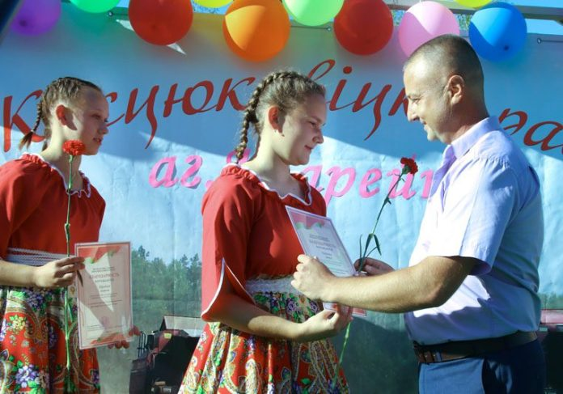
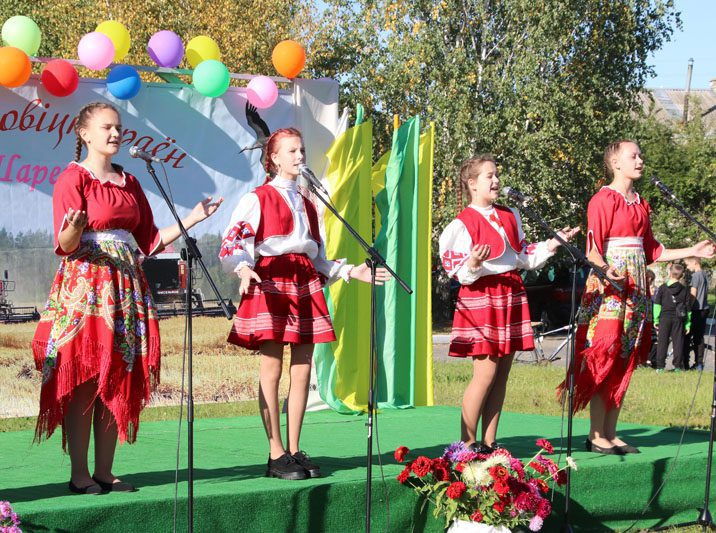
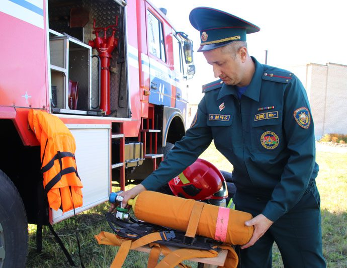
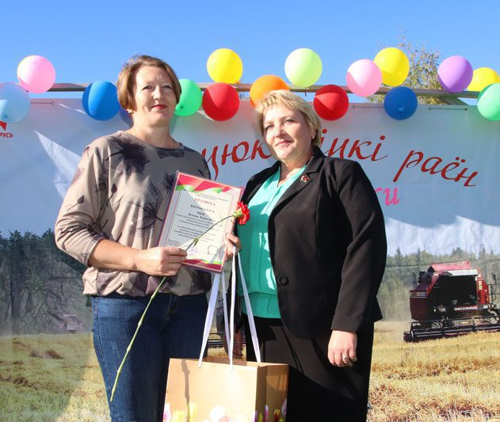
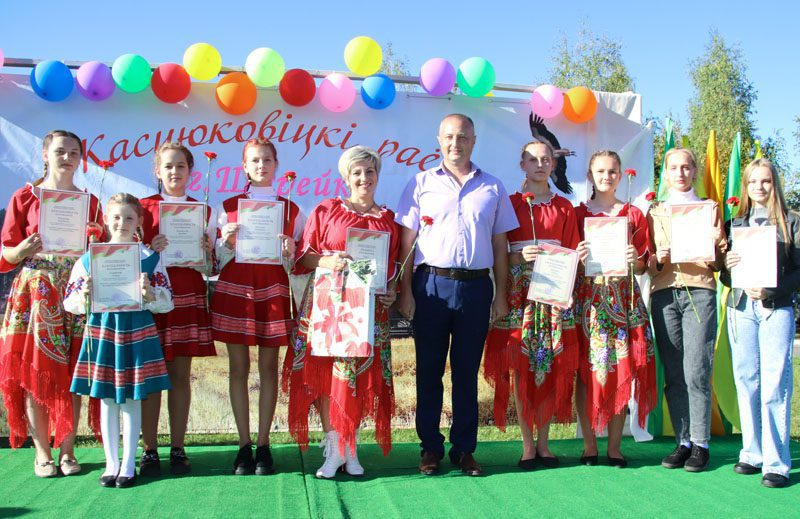

Агрогородок Шарейки создан на основе одноименной деревни в Пролетарском сельском совете. Согласно легенде, название произошло от прозвища первого поселенца Шаройка. Впервые упоминается в документальных источниках ХVI века в Кричевском старостве Мстиславского воеводства Великого княжества Литовского. В 1850 г. - 28 дворов, 190 жителей, владение помещика И. Барташевича. Основным занятием сельчан было земледелие. Деревня относилась к Прусинскому православному приходу церкви Казанской Божьей Матери. В 1909 году - 56 дворов, 384 жителя. В 1930 году были образованы 2 колхоза: «Працаўнік» и «Камуна Пралетарская». Работали кузница, ветряная и водяная мельницы, кирпичный завод. До аварии на ЧАЭС деревня входила в состав колхоза «Россия». Было 77 подворий, проживало 207 человек. В 1991 г. построен посёлок для переселенцев из деревень Дубровка, Скалин, Хаминка, Калодезская, Блудемля, Братьковичи, Осов. Статус агрогородка посёлок получил в октября 2007 г
Стрельцов Виталий Владимирович
16 сентября жители и гости агрогородка Шарейки отпраздновали День деревни. Это праздник всех жителей, каждый из которых внес свой вклад в развитие агрогородка.
 К празднику подготовились основательно: большая площадка рядом с сельским Домом культуры вместила в себя концертную сцену, палатки индивидуальных предпринимателей, где можно было купить сладкую вату, попкорн, всевозможные игрушки и сувениры, батуты и водный аттракцион для детей, торговлю кондитерскими изделиями, напитками и даже шашлыком с пылу с жару. Здесь же разместилась пожарная машина. Это наши спасатели для местной ребятни организовали площадку МЧС под девизом «Забота о безопасности родины», где можно было примерить спецодежду пожарных, посидеть в машине и пройти «Твистор безопасности». На праздник пришли все – от мала до велика. Детский смех, радость и веселье царили в это время на праздничной площадке.
  Агрогородок Шарейки сегодня Дата рождения – 1992 год Жителей – 557 Развитая инфраструктура: молочно-товарная ферма филиала № 1 «Цемагро» БЦЗ, сельский Дом культуры, средняя школа, детский сад, библиотека, отделение почтовой связи, фельдшерско-акушерский пункт. 